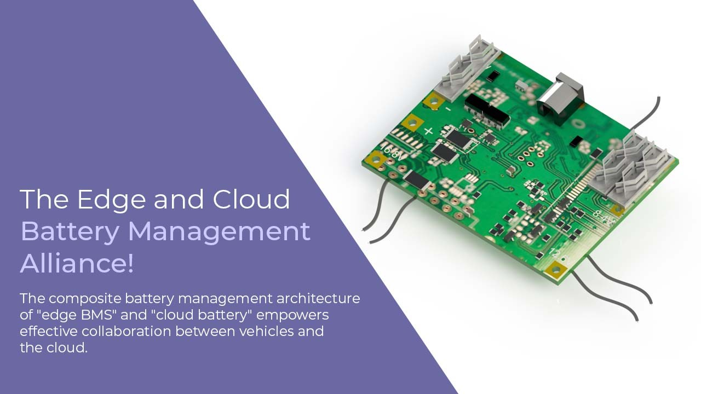
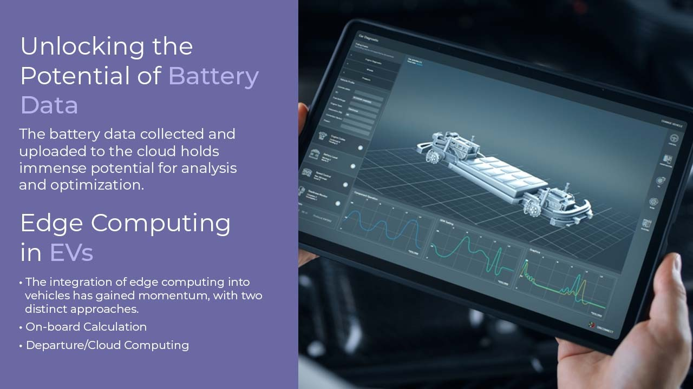
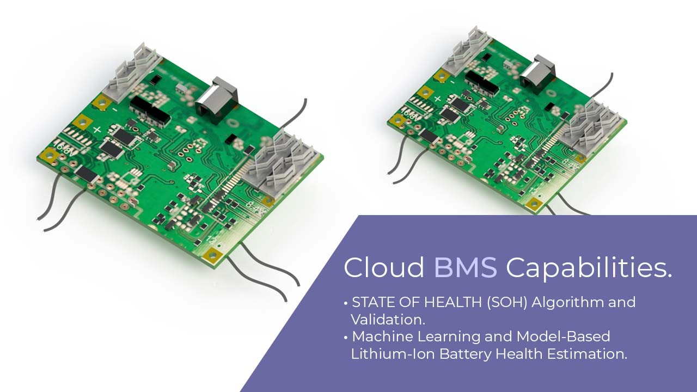

Introduction
The landscape of electric vehicles (EVs) and battery management systems (BMS) is evolving rapidly, with a growing emphasis on optimizing battery performance and extending lifespan. One of the intriguing developments in this domain is the integration of both "edge BMS" and "cloud battery" architectures. This innovative approach facilitates seamless cooperation between vehicles and cloud-based platforms, unlocking a plethora of benefits for battery management and EV performance enhancement.
The Edge and Cloud Battery Management Alliance

The composite battery management architecture of "edge BMS" and "cloud battery" empowers effective collaboration between vehicles and the cloud. The vehicle-side BMS takes on the responsibility of real-time data collection and short-term storage, while the cloud battery focuses on long-term data storage, particularly the main parameters of the vehicle's battery. This dual approach strikes a balance between short-term data accuracy and long-term data breadth, making the most of their respective strengths. The cloud-primarily focuses on long-term planning and forecasting, while the vehicle side prioritizes short-term analysis and execution.
Unlocking the Potential of Battery Data
The battery data collected and uploaded to the cloud holds immense potential for analysis and optimization. Cloud BMS can develop a wide array of battery algorithms, including fault diagnosis, lifespan evaluation, predictive modeling, residual value assessment, and charging strategy optimization. These algorithms provide robust support for battery management and contribute significantly to improving overall vehicle performance.

Edge Computing in EVs
The integration of edge computing into vehicles has gained momentum, with two distinct approaches: on-board computing and cloud/de-vehicle computing, each offering unique advantages and limitations.
On-board Calculation: This method involves performing computational tasks inside the vehicle. While it provides almost immediate results, allowing for quick decision-making, it has limited processing capacity and is primarily suitable for the causal processing of specific events.
Departure/Cloud Computing: Tasks are sent to external computing resources, typically cloud computing servers. This approach boasts substantial computing power, making it capable of processing large-scale data sets and gaining expert input and support. However, it may introduce delays due to data transfer, connectivity issues, and the need for high-bandwidth data transmission.
Cloud BMS Capabilities:
Cloud BMS extends its capabilities to address various aspects of battery management

STATE OF HEALTH (SOH) Algorithm and Validation: Cloud-based SOH algorithms leverage battery mechanisms, extensive industry knowledge, big data, and AI capabilities. These algorithms offer services such as fault prediction and dynamic management throughout the battery's lifecycle based on extensive cloud data.
Machine Learning and Model-Based Lithium-Ion Battery Health Estimation: Leveraging semi-empirical models, machine learning, and neural networks, cloud BMS provides accurate SOH estimations. Model accuracy relies on characterization methods, training data quantity, and ECM model precision.
Conclusion
The fusion of "edge BMS" and "cloud battery" management systems represents a significant advancement in the world of electric vehicles. This collaborative approach optimizes battery performance, enhances vehicle reliability, and extends battery lifespan. With the wealth of data and algorithms at their disposal, cloud BMS plays a pivotal role in the future of electric mobility, driving innovation and efficiency in battery management.